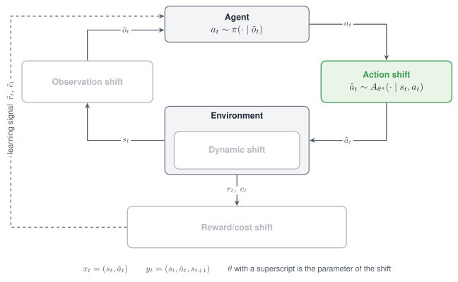

Action shift¶
An Action shift changes the command between the policy and the simulator. The policy issues one action and the task executes another; the result is always clipped to the action space.

The Action shift acts between the agent and the environment: the environment executes a perturbed action.
Properties¶
| Aspect | Action shift |
|---|---|
| Perturbs | The action passed to step, before it reaches the simulator |
| Target in code | action |
| Modes | Stochastic, Adversarial, Parametric, Non-stationary, Composition |
| Spaces | Continuous action spaces; rotate needs two dimensions |
| Acts on a frozen policy | Yes |
| Backends | Any; oppose_goal needs a goal-conditioned maze task |
Supported modes¶
| Mode | Mode name in code | What it does |
|---|---|---|
| Stochastic | gauss |
Adds Gaussian noise to every action component |
| Stochastic | uniform |
Adds uniform noise to every action component |
| Adversarial | oppose |
Subtracts a fixed magnitude along the direction of the action |
| Adversarial | rotate |
Turns the action by an angle and keeps its magnitude |
| Adversarial | oppose_goal |
Removes the component of the action that points at the goal |
| Adversarial | adversarial |
Builds one of the three above, chosen by the parameter kind |
| Parametric | shift |
Adds the same constant offset to every action component |
| Non-stationary | schedule on any of the seven mode names |
Varies the noise level, the offset, the magnitude or the angle within the episode |
| Composition | Several shifts in one list | The last shift in the list sees the action first |
Parameters¶
| Mode name | Parameter | Type | Default | Meaning |
|---|---|---|---|---|
| all | clip_first |
bool | False |
Clip the command to the action space before it is perturbed |
gauss |
mu |
float | 0.0 |
Mean of the noise |
sigma |
float | 0.05 |
Standard deviation of the noise | |
uniform |
low, high |
float | minus range, range |
Bounds of the noise |
range |
float | 0.1 |
Shorthand for a symmetric interval | |
shift |
shift |
float | value, else 0.0 |
The offset |
oppose |
eps |
float | 0.2 |
Magnitude that is subtracted |
rotate |
degrees |
float | 60.0 |
Angle the action is turned by |
oppose_goal |
eps |
float | 1.0 |
Share of the goal-directed component that is removed; 1 cancels it and 2 reverses it |
adversarial |
kind |
str | "oppose" |
"oppose", "rotate" or "oppose_goal" |
| the parameters of the member | As in the three rows above |
clip_first changes nothing for a policy that stays inside the action space. For a policy
whose output leaves the action space, it makes the shift reach the simulator instead of being
clipped away.
Declare the shift¶
from robustrllib import make_robust, ShiftSpec
STOCHASTIC = {
"gauss": ShiftSpec("action", "gauss", {"sigma": 0.10, "clip_first": True}),
"uniform": ShiftSpec("action", "uniform", {"low": -0.10, "high": 0.10, "clip_first": True}),
}
PARAMETRIC = ShiftSpec("action", "shift", {"shift": 0.05, "clip_first": True})
Adversarial, on any continuous action space:
ADVERSARIAL = {
"oppose": ShiftSpec("action", "oppose", {"eps": 0.10, "clip_first": True}),
"adversarial": ShiftSpec("action", "adversarial", {"kind": "oppose", "eps": 0.10, "clip_first": True}),
}
Adversarial, on a goal-conditioned maze task with a two-dimensional action:
ADVERSARIAL_MAZE = {
"rotate": ShiftSpec("action", "rotate", {"degrees": 60}),
"oppose_goal": ShiftSpec("action", "oppose_goal", {"eps": 1.0}),
"adversarial": ShiftSpec("action", "adversarial", {"kind": "rotate", "degrees": 60}),
}
env = make_robust("PointMaze_UMaze-v3", shifts=[ADVERSARIAL_MAZE["rotate"]], seed=0)
Non-stationary, with an opposition that grows within the episode:
NON_STATIONARY = ShiftSpec(
"action", "oppose", {"eps": 0.2, "clip_first": True},
schedule={"type": "linear", "start": 0.0, "end": 1.0, "t0": 0, "t1": 500},
)
Composition with a Latency shift. The noise is added to the command, and the noisy command is then delayed:
COMPOSITION = [
ShiftSpec("latency", "fixed", {"steps": 1}),
ShiftSpec("action", "gauss", {"sigma": 0.10, "clip_first": True}),
]
A recording wrapper between the task and the shift shows the action that is executed.
import numpy as np
import robustrllib.gym as gym
from robustrllib import build_pipeline
class Recorder(gym.Wrapper):
def __init__(self, env):
super().__init__(env)
self.executed = None
def step(self, action):
self.executed = np.round(np.asarray(action), 3)
return self.env.step(action)
def executed(spec, action, env_id="Hopper-v5"):
recorder = Recorder(make_robust(env_id))
env = build_pipeline(recorder, [spec], seed=0)
env.reset(seed=0)
env.step(np.asarray(action))
env.close()
return recorder.executed
print(executed(ShiftSpec("action", "oppose", {"eps": 0.2}), [0.5, 0.0, 0.0]))
print(executed(ShiftSpec("action", "oppose", {"eps": 0.2}), [0.1, 0.0, 0.0]))
print(executed(ShiftSpec("action", "rotate", {"degrees": 60}), [0.5, 0.0], "PointMaze_UMaze-v3"))
[0.3 0. 0. ]
[-0.1 0. 0. ]
[0.25 0.433]
oppose takes the same magnitude from a large and from a small action, so the small action is
reversed. rotate keeps the magnitude of 0.5 and changes the direction.
Rules¶
clip_firstis set on the Action shifts of an evaluation grid, so that the shift reaches the simulator for every policy.rotateis defined for two-dimensional action spaces; onHopper-v5it raisesValueErrorat the firststep.oppose_goalis defined for goal-conditioned maze tasks; on other tasks it raisesValueErrorat the firststep.adversarialwithkindand the member written as the mode name build the same shift.- A value of
kindother than the three members raisesValueErrorwhen the environment is built. - The executed action never leaves the action space.